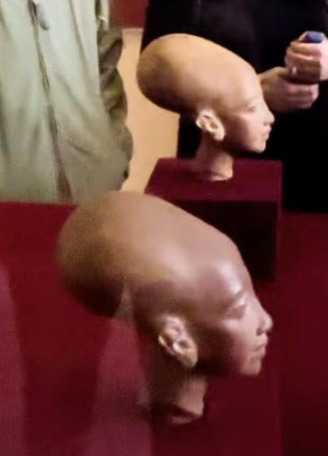
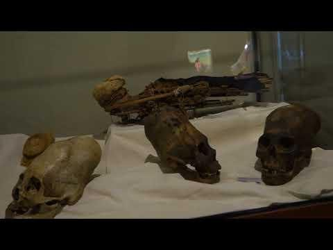

石の都の顔
フィクション。想像上の石の都の AIイラスト。各ペアでは、まず Jani Korpi がペルーで撮影した写真を示し、次にその形をもとにした AIイラストを示します。石の都とその住人は創作です。
01 · プリズムを調整する光学職人


額の幅と眼窩の間隔が、顔の上部の形を決める手がかりになりました。顎と口はイラストレーターの選択です。
元の写真 01 と観察 · ペア 04 と 10 は、このペアと同じ対象を写している可能性があります。
このページについて詳しく読み、13 組すべてを表示する
このページは、人類に先立つ高度な想像上の社会という Jani の着想に基づいています。元の写真の頭蓋骨は人の遺骨です。調査されたパラカスの資料では、長い頭は子どもの頃に形を整えた結果と解釈されています。Jani が撮影したそれぞれの頭蓋骨の個体データは未確定です。石の都とその住人は創作です。
各ペアでは、まず Jani の写真を示し、その隣または下に AIイラスト、つまり元の写真の形をもとに AI の助けを借りて作ったフィクションを示します。番号が元の写真とイラストを結びつけます。元の写真には下顎がないことが多いため、顎と口はイラストレーターの判断です。人物の表情、肌の色、髪、日々の暮らしは石の都のものです。イラストからは、故人の顔立ち、種、外見はわかりません。
頭蓋骨は何を語るのか事実のページ：写真 01–11、展示ラベル、公表された研究。
02 · 石材の荷が路地を通る


人物の額はかなりまっすぐに立ち上がっています。手本は、動画の組み写真の上段の明るい色の頭蓋骨でした。
03 · 継ぎ目を確かめる石工の女性


右を向いた横からの眺めでは、額から湾曲した後頭部へと続く線が本質的な形です。
04 · 種のさやを調べる庭師


写真 01 の丸い形が顔の上部に繰り返されています。手が元の写真の比率をつかむ助けになります。
元の写真 04 と観察 · ペア 01 と 10 は、このペアと同じ対象を写している可能性があります。
05 · 水路を水平にする水守の女性


出発点は、手前の頭蓋骨の左向きの横顔でした。後頭部の曲線は耳の後ろへと続いています。
06 · 布を調べる織り手たち


左の頭蓋骨の頭頂部は後ろへ傾いています。右のものの輪郭はよりまっすぐに立ち上がっています。
07 · トウモロコシ市場での出会い


三つの角度から、三つの異なる顔の輪郭の着想を得ました。市場の中央の人物は大人として想像されています。
08 · 門から延びるガラスの天蓋


左の頭蓋骨のより垂直な形と、右のもののより穏やかな額のラインは、横顔を比べるとよくわかります。
09 · 水車の歌


左右の頭の傾きの違いが、水車へかがむ二人の住人の顔になりました。
10 · 石の路地の笛吹き


横からの眺めは、丸い頭頂部と眼窩の縁を示しています。奏者の唇と顎の形は想像です。
元の写真 10 と観察 · ペア 01 と 04 は、このペアと同じ対象を写している可能性があります。
11 · 段丘都市でのかご交換


展示ケースの数多くの輪郭から、街の眺めが生まれました。手前の住人はこの場面のためにデザインされました。
カイロの石の顔とペルーの頭蓋骨
アマルナの頭部は彫刻であり、博物館は長い頭頂部をアマルナ美術の様式上の特徴と説明しています（Global Egyptian Museum, JE 44869 · ベルリン・エジプト博物館, ÄM 14145）。ペルーの頭蓋骨は人の遺骨で、調査されたパラカスの資料では、長い頭は子どもの頃に形を整えた結果と解釈されています（研究の背景）。両者のつながりは見た目だけです。
ペア 12 と 13 では、Jani が 2024年2月15日にカイロのエジプト博物館で撮影した石の頭部像を、ペルーの頭蓋骨の写真および石の都の人物と並べています。カイロの元画像は Jani の動画のフレームを切り抜いたものです（博物館ツアー 51:31 から）。通行人の顔はぼかしてあります。カイロの写真と研究の背景は事実のページにもあります：カイロ 2024。
Jani のフレームでは作品番号が読み取れないため、博物館の作品カードは比較の目安であって同定ではありません。カイロのエジプト博物館の収蔵品には、テル・エル＝アマルナで見つかった珪岩製の頭部 JE 44869 があり、Global Egyptian Museum によれば、おそらくアクエンアテンの長女メリトアテンです。ドイツの Deutsche Orient-Gesellschaft が 1912年に彫刻家トトメスの工房から発掘しました (Global Egyptian Museum)。同じ型のアマルナの王女の石の顔はニューヨークにもあります (The Met, Head of a princess from a group statue)。カイロの博物館自身の作品カード：Head of Princess, daughter of Akhenaten。
12 · 日よけ布を繕う織り手


頭頂部の曲線、額のライン、後頭部がどこまで伸びているかを見てください。異なる方向から撮った写真では、正確な比率は比較できません。下はイラストレーターの解釈です。

13 · 水門を調整する水路の計測係

頭頂部の曲線、額のライン、後頭部がどこまで伸びているかを見てください。異なる方向から撮った写真では、正確な比率は比較できません。下はイラストレーターの解釈です。

ペルーの動画にも同じ展示


この共通点は展示の特定に役立ちます。正確な出土地と展示ケースの対象の同一性は未確定のままです。事実のページの写真 09。
アマルナのもう一つの例：ベルリンの家族のレリーフ

ベルリンの家族のレリーフは、王家の横顔が平らな石の面に彫られた形でも表されていたことを示しています。娘たちの頭頂部は後ろへ伸びています。博物館によれば、この特徴は純粋な様式上の手法であり、遺伝的な、あるいは意図的に生じさせた形の印ではありません （博物館によるレリーフの解説、英語）。
人物の表情、肌の色、髪、日々の暮らしは、想像上の石の都のものです。いくつかの写真は同じ対象を異なる方向から写しています。